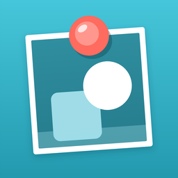
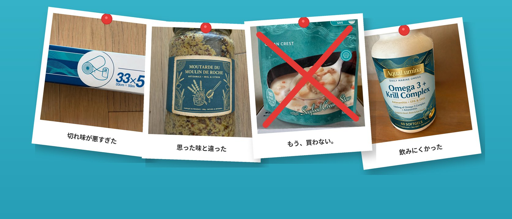
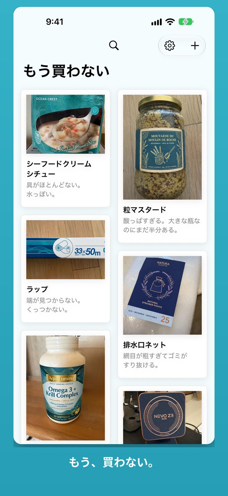
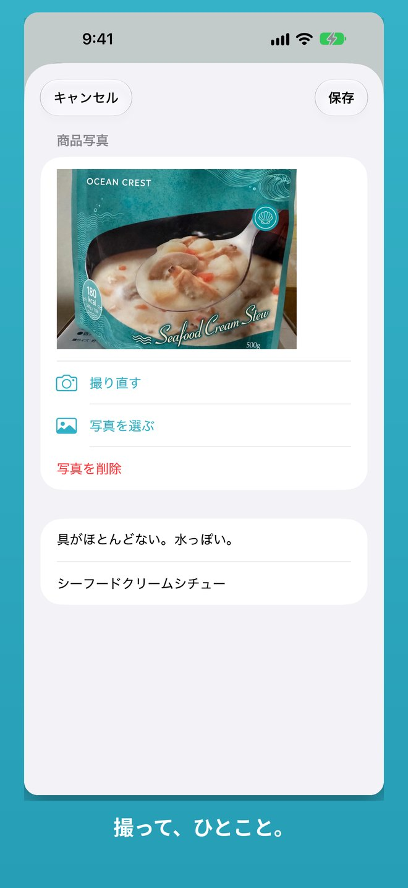
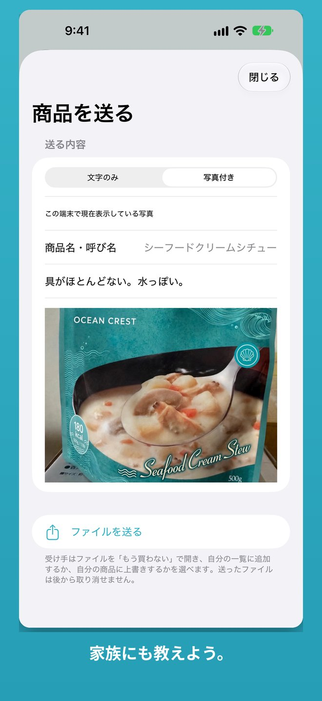
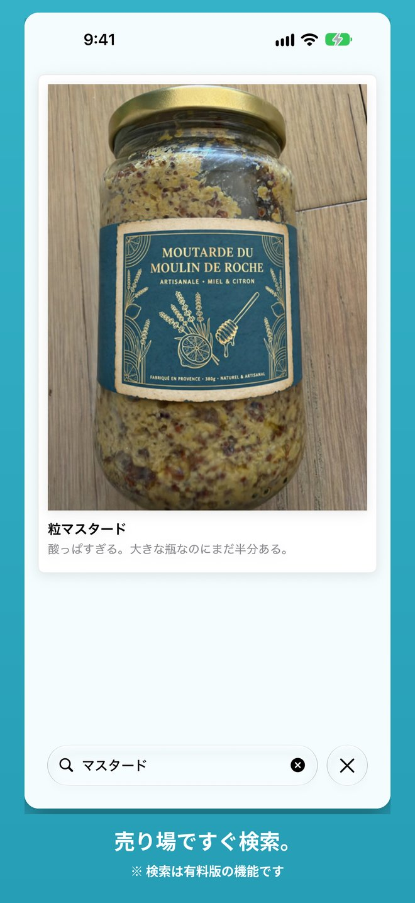
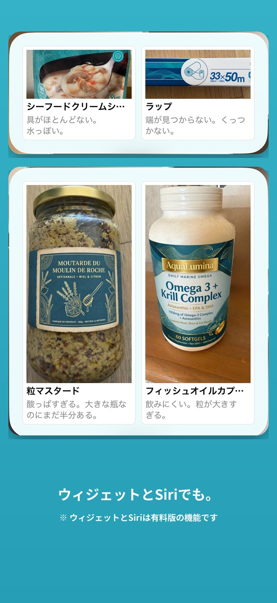

写真とひとことで記録するSnap a photo, add one line
買って失敗した物を写真に撮って、ひとことコメントを添えるだけ。写真がなくても、商品名とコメントだけで登録できます。Snap a photo of a purchase gone wrong and add one line about it. No photo? A name and a comment are enough to save it.

もう買わないWon’t Buy
買い物の記録・家族共有Shopping record & family sharing
買って失敗した物を写真とひとことで残し、家族と共有して二度と買わないためのアプリです。Snap a photo of a purchase gone wrong, add one line, and share it with your family — so nobody buys it again.

買って失敗した物を写真に撮って、ひとことコメントを添えるだけ。写真がなくても、商品名とコメントだけで登録できます。Snap a photo of a purchase gone wrong and add one line about it. No photo? A name and a comment are enough to save it.
登録した商品をファイルで家族に送れます。受け取った家族は内容を確認して、自分のアプリに追加できます。同じ失敗を繰り返さなくなります。Send a product to your family as a file. They can preview it and add it to their own list, so nobody repeats the same mistake.
有料版（500円買い切り）では、売り場で商品をすぐ検索できるほか、ホーム画面のウィジェットやSiriからも確認できます。広告も表示されなくなります。The paid version (¥500, one-time purchase) lets you search your list in the aisle, and check it from Home Screen widgets and Siri. Ads are removed too.





画面内の商品は紹介用の架空のものです。Products shown in the app screens are fictional examples.